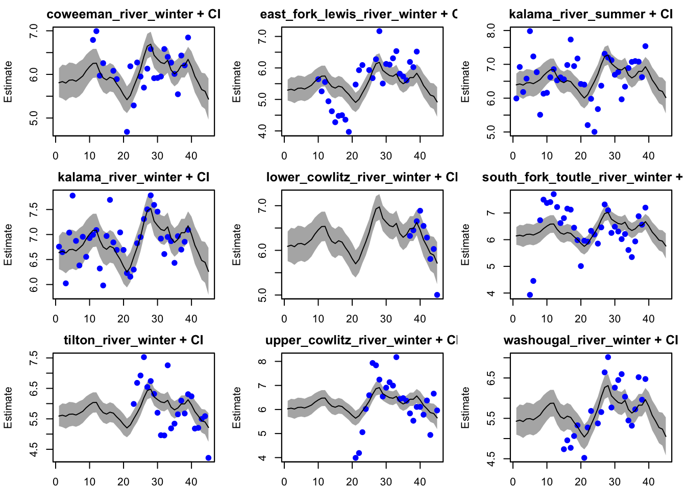
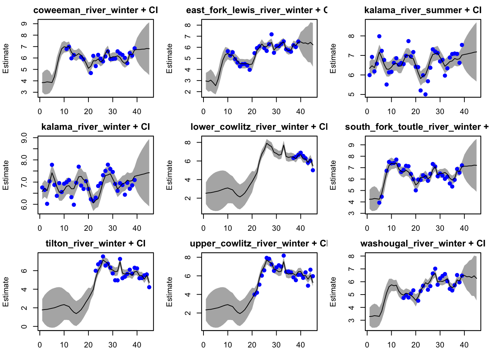
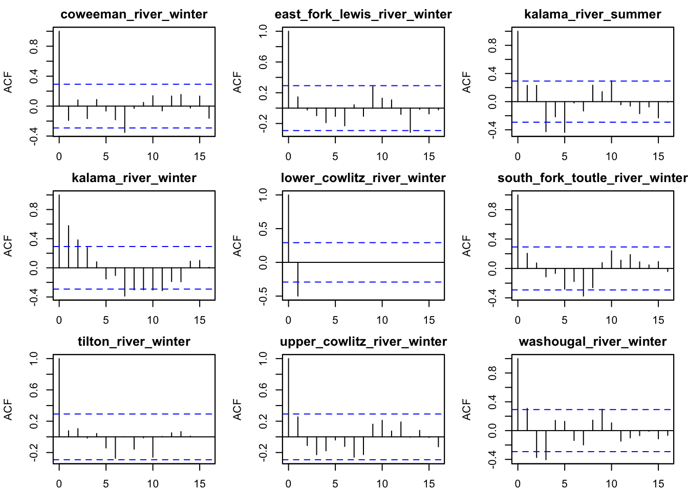
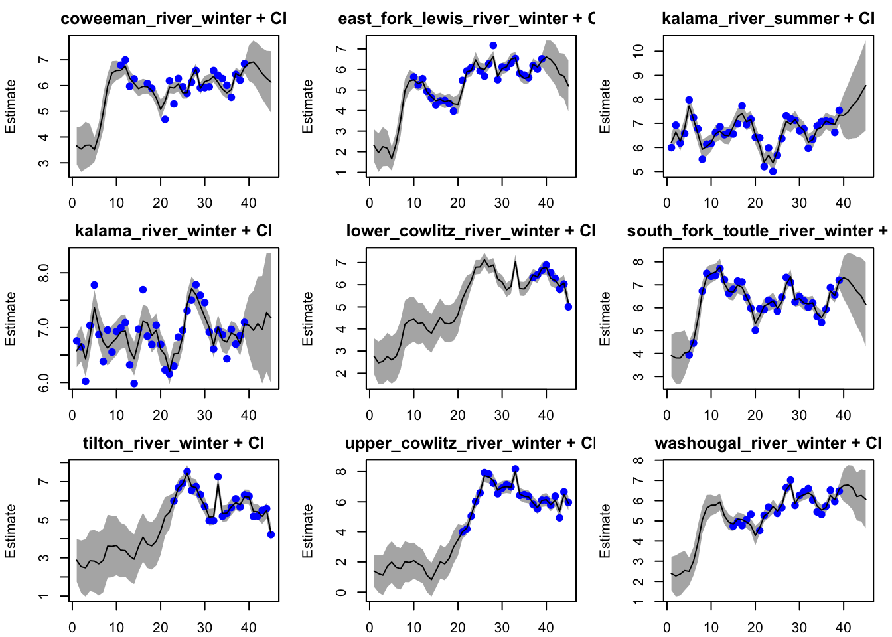
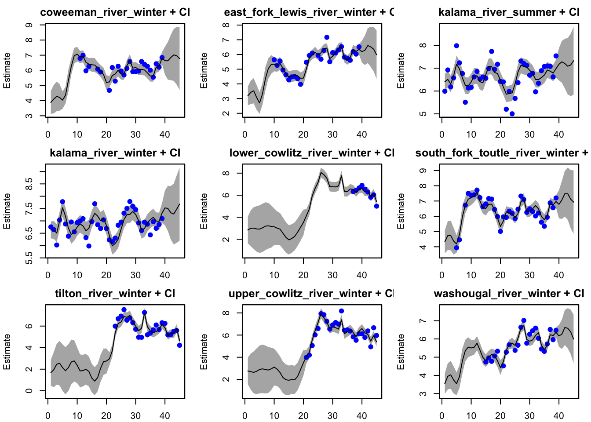
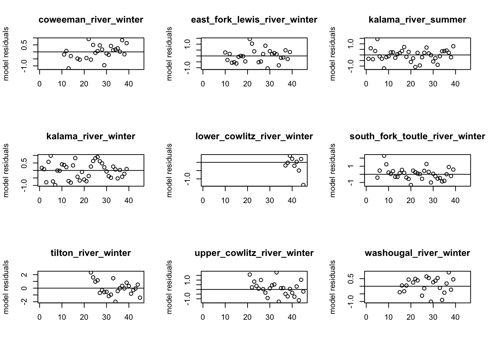
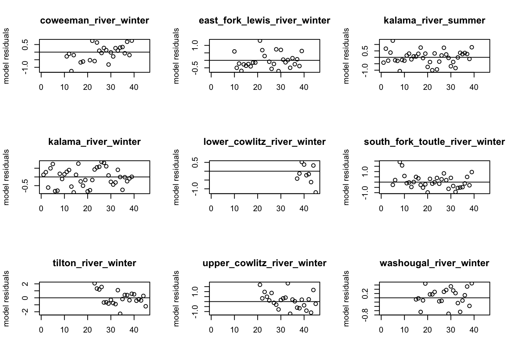
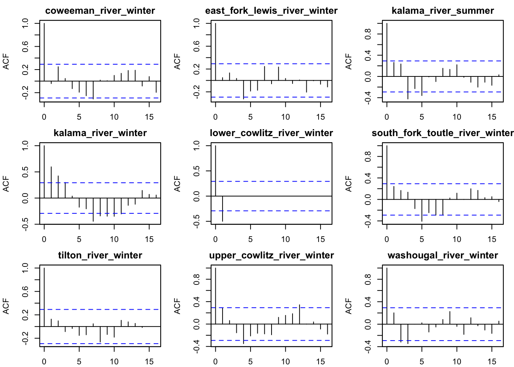

Each group has the same general tasks, but you will adapt them as you work on the data.
Create estimates of spawner abundance for all missing years and provide estimates of the decline from the historical abundance.
Evaluate support for the major population groups. Are the populations in the groups more correlated than outside the groups?
Evaluate the evidence of cycling in the data. We will talk about how to do this on the Tuesday after lab.
We analyzed the Steelhead (Lower Columbia ESU). We decided to exclude the Gorge Tributary winter run because there was only 1 short time series, and focused the 9 remaining runs that belonged to Cascade major population group.
Methods
We tested 5 different population groups hypotheses: one population, individual populations, run timing groups, spatial groups, and correlation groups.
One population \[
\begin{bmatrix} y_{1} \\ y_{2} \\ \vdots \\y_{9} \end{bmatrix}_{t} =
\begin{bmatrix}1\\
1\\
\vdots\\
\\
1\end{bmatrix}
x_{t} + \mathbf{a} + \mathbf{v_t} \text{ where } \mathbf{v_t} \sim MVN(0, \mathbf{R})
\]
\[
\begin{bmatrix} x \end{bmatrix}_{t} =
\begin{bmatrix}1\\
\end{bmatrix}
x_{t-1} + u + w_t \text{ where } w_t \sim N(0,q)
\]
We assume that all models have identical observation errors, thus a diagonal and equal R matrix. \[
\mathbf{R} =
\begin{bmatrix} r & 0 & ...& 0\\
0 & r & ...& 0\\
\vdots & 0 & \ddots & \vdots\\
0 & 0 & 0 & r \end{bmatrix}
\] For each model we test both equal and unequal biases for the states. We also assumed all states were correlated over time and test both equal var-cov and unconstrained process errors for each state.
Equal Bias \[
\mathbf{u} =
\begin{bmatrix} u\\
\vdots\\
u\end{bmatrix}
\] Unequal Bias \[
\mathbf{u} =
\begin{bmatrix} u_{1}\\
\vdots\\
u_{i}\end{bmatrix} \text{where i is # of states}
\]
Equal Variance-Covariance \[
\begin{equation}
\mathbf{Q}=\begin{bmatrix}
q & c & ... & c \\
c & q & \ddots & \vdots\\
\vdots & c & \ddots & c \\
c & c & ... & q \end{bmatrix}
\end{equation}
\text{where # of rows is equal to # of states}
\] Unconstrained \[
\begin{equation}
\mathbf{Q}=\begin{bmatrix}
q_{1}& c_{1,2} & ... & c_{1,i} \\
c_{1,2} & q_{2} & \ddots & c_{2,i}\\
\vdots & \ddots & \ddots & \vdots \\
c_{1,i} & ... & c_{i-1,i} & q_{i} \end{bmatrix}
\end{equation}
\text{where # of rows is equal to # of states}
\]
Data exploration
Load the data.
Code
library(tidyverse)
── Attaching core tidyverse packages ──────────────────────── tidyverse 2.0.0 ──
✔ dplyr 1.1.2 ✔ readr 2.1.4
✔ forcats 1.0.0 ✔ stringr 1.5.0
✔ ggplot2 3.4.2 ✔ tibble 3.2.1
✔ lubridate 1.9.2 ✔ tidyr 1.3.0
✔ purrr 1.0.1
── Conflicts ────────────────────────────────────────── tidyverse_conflicts() ──
✖ dplyr::filter() masks stats::filter()
✖ dplyr::lag() masks stats::lag()
ℹ Use the conflicted package (<http://conflicted.r-lib.org/>) to force all conflicts to become errors
Code
library(dplyr)library(janitor)
Attaching package: 'janitor'
The following objects are masked from 'package:stats':
chisq.test, fisher.test
Code
library(MARSS)library(forecast)
Registered S3 method overwritten by 'quantmod':
method from
as.zoo.data.frame zoo
[1] "Steelhead (Middle Columbia River DPS)"
[2] "Steelhead (Upper Columbia River DPS)"
[3] "Steelhead (Lower Columbia River DPS)"
[4] "Salmon, coho (Lower Columbia River ESU)"
[5] "Salmon, Chinook (Lower Columbia River ESU)"
Code
df <- columbia.river %>%subset(esu_dps %in%"Steelhead (Lower Columbia River DPS)")cat("colnames: ", colnames(df), "\n")
colnames: species esu_dps majorpopgroup esapopname commonpopname run spawningyear value value_type
Code
unique(df$esapopname)
[1] "Steelhead (Lower Columbia River DPS) Kalama River - summer"
[2] "Steelhead (Lower Columbia River DPS) Coweeman River - winter"
[3] "Steelhead (Lower Columbia River DPS) East Fork Lewis River - winter"
[4] "Steelhead (Lower Columbia River DPS) Kalama River - winter"
[5] "Steelhead (Lower Columbia River DPS) Lower Cowlitz River - winter"
[6] "Steelhead (Lower Columbia River DPS) South Fork Toutle River - winter"
[7] "Steelhead (Lower Columbia River DPS) Tilton River - winter"
[8] "Steelhead (Lower Columbia River DPS) Upper Cowlitz River - winter"
[9] "Steelhead (Lower Columbia River DPS) Washougal River - winter"
[10] "Steelhead (Lower Columbia River DPS) Upper Gorge Tributaries - winter"
esuname <- esu[3]dat <- columbia.river %>%subset(esu_dps == esuname) %>%# get only this ESUmutate(log.spawner =log(value)) %>%# create a column called log.spawnerselect(esapopname, spawningyear, log.spawner) %>%# get just the columns that I needpivot_wider(names_from ="esapopname", values_from ="log.spawner") %>%column_to_rownames(var ="spawningyear") %>%# make the years rownamesas.matrix() %>%# turn into a matrix with year down the rowst() # make time across the columnsdat[is.na(dat)] <-NA## Fixing row namestmp <-rownames(dat)tmp <- stringr::str_replace(tmp, "Steelhead [(]Lower Columbia River DPS[)]", "")tmp <-make_clean_names(tmp)rownames(dat) <- tmpdat <- dat[1:9,]# remove upper gorgedat <- dat[ order(row.names(dat)), ]## sort
Results
The simplest model
Fitting the most simple model to help determine the need to group populations: One big population with different observations (populations).
Code
mod.list.0<-list(B =matrix(1), U =matrix("u"), Q =matrix("q"), Z =matrix(1, 9, 1), A ="scaling", R ="diagonal and equal", x0 =matrix("mu"), tinitx =0)fit_simple <-MARSS(dat, model=mod.list.0, control=list(maxit=1000))
Success! abstol and log-log tests passed at 38 iterations.
Alert: conv.test.slope.tol is 0.5.
Test with smaller values (<0.1) to ensure convergence.
MARSS fit is
Estimation method: kem
Convergence test: conv.test.slope.tol = 0.5, abstol = 0.001
Estimation converged in 38 iterations.
Log-likelihood: -247.9172
AIC: 519.8343 AICc: 521.1792
Estimate
A.east_fork_lewis_river_winter -0.51303
A.kalama_river_summer 0.58517
A.kalama_river_winter 0.82974
A.lower_cowlitz_river_winter 0.28048
A.south_fork_toutle_river_winter 0.33119
A.tilton_river_winter -0.21650
A.upper_cowlitz_river_winter 0.21896
A.washougal_river_winter -0.38030
R.diag 0.38503
U.u -0.00853
Q.q 0.04702
x0.mu 5.81906
Initial states (x0) defined at t=0
Standard errors have not been calculated.
Use MARSSparamCIs to compute CIs and bias estimates.
Code
plot(fit_simple, plot.type="fitted.ytT")

plot type = fitted.ytT Observations with fitted values
We see that the simple model is not the best at fitting the population estimates for many of the populations (e.g., Upper Cowlitz winter, East Fork Lewis winter). Many of the residuals do not appear to be stationary.
The most flexible model
Fitting the most flexible model to help determine spatial Z hypotheses: Individual populations with an unconstrained Q matrix and unequal U
Code
mod.list1 <-list(U ="unequal",R ="diagonal and equal",Q ="unconstrained")fit1 <-MARSS(dat, model=mod.list1, control=list(maxit=800))
Some of the populations are correlated. This implies it would be reasonable to test for equal variance covariance, along with some other population structures.
We opted to test this in a for loop to compare multiple spatial structures, u options, and two options for Q.
Model Assumptions
Below we setting up population grouping hypotheses (Z matrices), correlation structures, drift or “bias” terms, and the fixed model list.
Code
# Here we evaluated the data support for the following hypotheses about Lower Columbia salmon river trends# Each Z model is a hypothesis## Simple run timing groupings# summer = kalama_river_summer# winter = remaining population## Simple spatial groupings# coweeman = coweeman and sf toutle# ef_lewis = east fork lewis# kalama = kalama summer and winter# cowlitz = lower cowlitz, tilton, and upper cowlitz# washougal = washougal## Correlation spatial groupings# coweeman = coweema, ef_lewis, sf toutle, washougal# kalama = kalama summer and winter# cowlitz = lower cowlitz, tilton, and upper cowlitzZ.models <-list(H1 =matrix(1,9,1), #one hidden population stateH2 =factor(c("coweeman","ef_lewis", "kalama_sum",'kalama_win', "low_cowlitz", "sf_toutle","tilton", "up_cowlitz", "washougal")), #states are defined by individual populationH3 =factor(c("winter","winter", "summer",'winter', "winter", "winter","winter", "winter", "winter")),# states defined by running timing grouping (n = 2)H4 =factor(c("coweeman","ef_lewis", "kalama",'kalama', "cowlitz", "coweeman","cowlitz", "cowlitz", "washougal")),# states defined by spatial grouping (n = 5)H5 =factor(c("coweeman","coweeman", "kalama",'kalama', "cowlitz", "coweeman","cowlitz", "cowlitz", "coweeman"))# states defined by correlation (n = 3))names(Z.models) <-c("one_population","indiv_population","run_timing_groups",'spatial_groups',"corr_groups")# Also testing different process error varcovar matricesQ.models2 <-c("equalvarcov","unconstrained")# Bias termsu2 <-c("unequal", 'equal')# Setting fixed portion of mod listmod.list =list(A ="scaling",R ="diagonal and equal")
The best model (as supported by AICc) includes 5 states (our “spatial populations” model) that are correlated with unique variance and covariance terms (unconstrained Q) with the same drift term (U)
Inspecting the best model (spatial group, unconstrained Q, equal U)
Code
best_mod <- fits[[16]]best_mod
MARSS fit is
Estimation method: kem
Convergence test: conv.test.slope.tol = 0.5, abstol = 0.001
Estimation converged in 378 iterations.
Log-likelihood: -200.3077
AIC: 452.6153 AICc: 459.0557
Estimate
A.kalama_river_winter 0.24416
A.south_fork_toutle_river_winter 0.38706
A.tilton_river_winter -0.75459
A.upper_cowlitz_river_winter -0.19777
R.diag 0.15851
U.1 0.03097
Q.(1,1) 0.22524
Q.(2,1) 0.17195
Q.(3,1) -0.01570
Q.(4,1) 0.02272
Q.(5,1) 0.17217
Q.(2,2) 0.19999
Q.(3,2) -0.07064
Q.(4,2) 0.12119
Q.(5,2) 0.16006
Q.(3,3) 0.09252
Q.(4,3) 0.00657
Q.(5,3) -0.01488
Q.(4,4) 0.38669
Q.(5,4) 0.11117
Q.(5,5) 0.15486
x0.coweeman 3.81220
x0.ef_lewis 2.92567
x0.kalama 6.30723
x0.cowlitz 2.50039
x0.washougal 3.25935
Initial states (x0) defined at t=0
Standard errors have not been calculated.
Use MARSSparamCIs to compute CIs and bias estimates.
Code
plot(best_mod, plot.type ="fitted.ytT")
MARSSresiduals.tT reported warnings. See msg element or attribute of returned residuals object.

plot type = fitted.ytT Observations with fitted values
MARSSresiduals.tt1 reported warnings. See msg element of returned residuals object.

plot type = acf.std.model.resids.ytt1
In our best model, we do see some autocorrelation in our residuals. In the next section, we will try to include a covariate of season into our best model and see if this improves the model fit.
Comparing best model to the most flexible model
Code
plot(fit1, plot.type="fitted.ytT")#flexible
MARSSresiduals.tT reported warnings. See msg element or attribute of returned residuals object.

plot type = fitted.ytT Observations with fitted values
Code
plot(best_mod, plot.type="fitted.ytT")#best
MARSSresiduals.tT reported warnings. See msg element or attribute of returned residuals object.
plot type = fitted.ytT Observations with fitted values
Do our estimates differ depending on the assumptions of the structure of the data, i.e. our assumptions about the x’s, Q, and U?
Definitely! The more flexible model (individual states, unequal bias term) produces more variable forecasts (with some populations increasing or decreasing through time). Our spatial model (5 states, equal bias term) provides relatively stable forecasts across populations, likely due to the “equal” bias term.
Seasonality as a covariate
In this next section, we test for age structured cycling of steelhead populations or “season” in our best “spatial” model.
Initial model fitting
Code
Z.mat <-factor(c("coweeman","ef_lewis", "kalama",'kalama', "cowlitz", "coweeman","cowlitz", "cowlitz", "washougal")) #Our best model Z matrix# Setting up 3-5 year cycles as a covariateTT <-dim(dat)[2]covariates <-rbind( forecast::fourier(ts(1:TT, freq=3), K=1) |>t(), forecast::fourier(ts(1:TT, freq=4), K=1) |>t(), forecast::fourier(ts(1:TT, freq=5), K=1) |>t())mod.list2 =list(U ="equal",Q ="unconstrained", Z = Z.mat,A ="scaling",R ="diagonal and equal",D ="unconstrained", # We include these in the D matrix because the age structure cycling of salmon typically affects our observations rather than the stated = covariates)fit_season <-MARSS(dat, model=mod.list2)
These estimates suggest that there is some evidence of cycling at the 5 year interval in the East Fork Lewis, the South Fork Toutle, the Tilton, and the Washougal River steelhead populations.
This, however, increases our AICc quite a bit, from 459.0557 in our original best model to 582.6302. Now let’s try just including 5 year cycles and compare this AICc to our best model.
Comparing models with and without 5 year cycles
Code
mod.list3 =list(U ="equal",Q ="unconstrained", Z = Z.mat,A ="scaling",R ="diagonal and equal",D ="unconstrained", # We include these in the D matrix because the age structure cycling of salmon typically affects our observations rather than the stated = covariates[5:6,]) # Specifying just 5 year cycles fit_5season <-MARSS(dat, model=mod.list3)
Success! abstol and log-log tests passed at 386 iterations.
Alert: conv.test.slope.tol is 0.5.
Test with smaller values (<0.1) to ensure convergence.
MARSS fit is
Estimation method: kem
Convergence test: conv.test.slope.tol = 0.5, abstol = 0.001
Estimation converged in 386 iterations.
Log-likelihood: -187.2444
AIC: 462.4888 AICc: 482.2888
Estimate
A.kalama_river_winter 0.24684
A.south_fork_toutle_river_winter 0.36821
A.tilton_river_winter -0.78743
A.upper_cowlitz_river_winter -0.19833
R.diag 0.14171
U.1 0.03266
Q.(1,1) 0.18084
Q.(2,1) 0.12142
Q.(3,1) -0.00192
Q.(4,1) 0.00550
Q.(5,1) 0.11653
Q.(2,2) 0.14378
Q.(3,2) -0.05419
Q.(4,2) 0.11406
Q.(5,2) 0.10159
Q.(3,3) 0.08860
Q.(4,3) 0.00342
Q.(5,3) 0.00379
Q.(4,4) 0.41381
Q.(5,4) 0.10054
Q.(5,5) 0.09813
x0.coweeman 4.00994
x0.ef_lewis 3.25543
x0.kalama 6.23754
x0.cowlitz 2.83372
x0.washougal 3.65518
D.(coweeman_river_winter,S1-5) -0.12553
D.(east_fork_lewis_river_winter,S1-5) -0.01908
D.(kalama_river_summer,S1-5) 0.12381
D.(kalama_river_winter,S1-5) 0.06702
D.(lower_cowlitz_river_winter,S1-5) 0.01015
D.(south_fork_toutle_river_winter,S1-5) 0.02201
D.(tilton_river_winter,S1-5) -0.40277
D.(upper_cowlitz_river_winter,S1-5) 0.07656
D.(washougal_river_winter,S1-5) -0.04601
D.(coweeman_river_winter,C1-5) -0.12431
D.(east_fork_lewis_river_winter,C1-5) -0.27756
D.(kalama_river_summer,C1-5) 0.05680
D.(kalama_river_winter,C1-5) 0.16503
D.(lower_cowlitz_river_winter,C1-5) -0.10268
D.(south_fork_toutle_river_winter,C1-5) -0.34589
D.(tilton_river_winter,C1-5) -0.09048
D.(upper_cowlitz_river_winter,C1-5) 0.06995
D.(washougal_river_winter,C1-5) -0.30581
Initial states (x0) defined at t=0
Standard errors have not been calculated.
Use MARSSparamCIs to compute CIs and bias estimates.
Code
(mod_AICc <-c(fit_5season$AICc, best_mod$AICc))
[1] 482.2888 459.0557
Interesting– This greatly improves our AICc, but the model without cycles still test as the best model.
Next we compare the fits of the best spatial model and the spatial model with cycling.
Code
plot(best_mod, plot.type="fitted.ytT")
MARSSresiduals.tT reported warnings. See msg element or attribute of returned residuals object.
plot type = fitted.ytT Observations with fitted values
Code
plot(fit_5season, plot.type="fitted.ytT")
MARSSresiduals.tT reported warnings. See msg element or attribute of returned residuals object.

plot type = fitted.ytT Observations with fitted values
Adding a 5 year cycling component does not have significant changes to the fit during years of data, but it does have a big impact on the hindcast and forecast fits.
Next we compare the residuals of our best model and our model with 5 year cycles.
Code
# Residuals of best modelpar(mfrow =c(3, 3))resids <-MARSSresiduals(best_mod, type ="tt1")
MARSSresiduals.tt1 reported warnings. See msg element of returned residuals object.
Code
for (i in1:9) {plot(resids$model.residuals[i, ], ylab ="model residuals", xlab ="")abline(h =0)title(rownames(dat)[i])}

Code
# Residuals of best model + cyclingpar(mfrow =c(3, 3))resids <-MARSSresiduals(fit_5season, type ="tt1")
MARSSresiduals.tt1 reported warnings. See msg element of returned residuals object.
Code
for (i in1:9) {plot(resids$model.residuals[i, ], ylab ="model residuals", xlab ="")abline(h =0)title(rownames(dat)[i])}

Code
# ACF of residualsplot(best_mod, plot.type ="acf.std.model.resids.ytt1")
MARSSresiduals.tt1 reported warnings. See msg element of returned residuals object.
MARSSresiduals.tt1 reported warnings. See msg element of returned residuals object.

plot type = acf.std.model.resids.ytt1
When comparing the residual and ACF plots of the spatial model w/o cycling and the spatial model w/ cycling, we do see some of the residual and ACF plots improve. For example, around lag 10 in the Kalama River winter population, the autocorrelation reduces relative the spatial model w/o cycling. The residual plots also remove some of the cycling patterns in a few groups (e.g., Tilton River, South Fork Toutle). However, the cyclic covariates in the process does not completely remove the residuals’ cycling patterns; positive values tend to follow positive ones.
Discussion
Our best model was our “spatial” group model, which was designed based on the spatial proximity of the subwatersheds of study and their steelhead populations. This grouped 9 steelhead populations together to form 5 populations or 5 “hidden states” of steelhead abundance dynamics through time. This implies that steelhead populations located closer in space or within the same catchment share temporal variation in their abundance dynamics, suggesting that populations are largely influenced by similar river or watershed characteristics (e.g., habitat quality or availability) and not so much run timing. All run populations seem to have increased since the earliest year of data, though some populations seem to have decreased slightly in recent years (e.g., Washougal, Cowlitz, East Fork Lewis). Our best performing model seems to fit the data well with no major problems in the residuals, with the exception of cycling.
We found some evidence for 5 year cycles, though it did not lower the AIC relative to the spatial model. This makes sense since steelhead (relative to other salmonids) do not exhibit as much cycling. Even within these 9 runs, we see some runs (e.g. Kalama winter) show more cycling patterns than others (e.g. Upper Cowlitz winter) do. A reason why AIC does not support adding 5 year cycles to all runs is that not all runs need cycling and the addition of parameters for these runs is superfluous. Cycling did somewhat improve autocorrelation in our model residuals by reducing the number of statistically significant ACF lags.
Future improvements to our best performing spatial model would be to include cycling in only populations that strong seasonal patterns. This, however, involves “hand-baking” a series of upper C matrices and was outside the scope of this study.
Description of each team member’s contributions
Liz worked on the model with 9 states, the spatial model, correlation model, model selection process, and cycling model. Terrance worked on the methods, matrix notations, simple model with 1 state, and run timing model. Eric worked on adding the cycling component and model selection of cycling period. All group members worked on the discussion and interpretation.
Source Code
---title: Team 2 - Lab 2subtitle: Lab 2 MARSS Modelsauthor: Liz Elmstrom, Terrance Wang, Eric Frenchdate: April 20, 2023output: html_document: code-folding: true toc: true toc_float: true---# General QuestionsEach group has the same general tasks, but you will adapt them as you work on the data.1. Create estimates of spawner abundance for all missing years and provide estimates of the decline from the historical abundance.2. Evaluate support for the major population groups. Are the populations in the groups more correlated than outside the groups?3. Evaluate the evidence of cycling in the data. *We will talk about how to do this on the Tuesday after lab.*We analyzed the Steelhead (Lower Columbia ESU). We decided to exclude the Gorge Tributary winter run because there was only 1 short time series, and focused the 9 remaining runs that belonged to Cascade major population group. # MethodsWe tested 5 different population groups hypotheses: one population, individual populations, run timing groups, spatial groups, and correlation groups. One population$$\begin{bmatrix} y_{1} \\ y_{2} \\ \vdots \\y_{9} \end{bmatrix}_{t} = \begin{bmatrix}1\\1\\\vdots\\\\1\end{bmatrix} x_{t} + \mathbf{a} + \mathbf{v_t} \text{ where } \mathbf{v_t} \sim MVN(0, \mathbf{R})$$$$\begin{bmatrix} x \end{bmatrix}_{t} = \begin{bmatrix}1\\\end{bmatrix} x_{t-1} + u + w_t \text{ where } w_t \sim N(0,q)$$Individual populations$$\begin{bmatrix} y_{1} \\ y_{2} \\ \vdots \\y_{9} \end{bmatrix}_{t} = I_{9}\begin{bmatrix} x_{1} \\ x_{2} \\ \vdots \\x_{9} \end{bmatrix}_{t} + \mathbf{a} + \mathbf{v_t} \text{ where } \mathbf{v_t} \sim MVN(0, \mathbf{R})$$$$\begin{bmatrix} x_{1} \\x_{2} \\\vdots \\x_{9}\end{bmatrix}_{t}= I_{9}\begin{bmatrix} x_{1} \\x_{2} \\\vdots \\x_{9}\end{bmatrix}_{t-1} + \begin{bmatrix}u_{1}\\u_{2}\\ \vdots \\u_{9} \end{bmatrix} + \mathbf{w_t} \text{ where } \mathbf{w_t} \sim MVN(0, \mathbf{Q})$$Run Timing Groups, Spatial Groups, Correlation GroupsWe provide the Z matrices for the 3 groupings below. $$\begin{equation*}\begin{array}{rcccc}&Run Timing&Spatial&Correlation\\&\text{summer winter}&\text{Coweeman E-Fork-Lewis Kalama Cowlitz Washougal}&\text{Coweeman Kalama Cowlitz}\\\hline\begin{array}{r}\text{Coweeman - W}\\ \text{Fork E Lewis - W} \\ \text{Kalama - S} \\ \text{Kalama - W} \\\text{Lower Cowlitz - W} \\ \text{Toutle - W} \\ \text{Tilton - W} \\ \text{Upper Cowlitz - W} \\ \text{Washougal - W}\end{array}&\begin{bmatrix}0 & 1 \\0 & 1 \\1 & 0 \\0 & 1 \\0 & 1 \\0 & 1 \\0 & 1 \\0 & 1 \\0 & 1 \\\end{bmatrix}&\begin{bmatrix}1 & 0 & 0 & 0 &0 \\0 & 1 & 0 & 0 &0 \\0 & 0 & 1 & 0 &0 \\0 & 0 & 1 & 0 &0 \\0 & 0 & 0 & 1 &0 \\1 & 0 & 0 & 0 &0 \\0 & 0 & 0 & 1 &0 \\1 & 0 & 0 & 0 &0 \\0 & 0 & 0 & 0 &1 \\\end{bmatrix}&\begin{bmatrix}1 & 0 & 0 \\1 & 0 & 0 \\0 & 1 & 0 \\0 & 1 & 0 \\0 & 0 & 1 \\1 & 0 & 0 \\0 & 0 & 1 \\0 & 0 & 1 \\1 & 0 & 0\end{bmatrix}&\end{array}\end{equation*}$$We assume that all models have identical observation errors, thus a diagonal and equal R matrix. $$\mathbf{R} = \begin{bmatrix} r & 0 & ...& 0\\0 & r & ...& 0\\\vdots & 0 & \ddots & \vdots\\0 & 0 & 0 & r \end{bmatrix}$$For each model we test both equal and unequal biases for the states. We also assumed all states were correlated over time and test both equal var-cov and unconstrained process errors for each state.Equal Bias$$\mathbf{u} = \begin{bmatrix} u\\\vdots\\u\end{bmatrix}$$Unequal Bias$$\mathbf{u} = \begin{bmatrix} u_{1}\\\vdots\\u_{i}\end{bmatrix} \text{where i is # of states} $$Equal Variance-Covariance$$\begin{equation}\mathbf{Q}=\begin{bmatrix} q & c & ... & c \\ c & q & \ddots & \vdots\\ \vdots & c & \ddots & c \\ c & c & ... & q \end{bmatrix}\end{equation} \text{where # of rows is equal to # of states} $$Unconstrained$$\begin{equation}\mathbf{Q}=\begin{bmatrix} q_{1}& c_{1,2} & ... & c_{1,i} \\ c_{1,2} & q_{2} & \ddots & c_{2,i}\\ \vdots & \ddots & \ddots & \vdots \\ c_{1,i} & ... & c_{i-1,i} & q_{i} \end{bmatrix}\end{equation} \text{where # of rows is equal to # of states} $$# Data explorationLoad the data.```{r}library(tidyverse)library(dplyr)library(janitor)library(MARSS)library(forecast)library(broom)load(here::here("Lab-2", "Data_Images", "columbia-river.rda"))#Evolutionary Significant Unitsesu <-unique(columbia.river$esu_dps)esu``````{r}df <- columbia.river %>%subset(esu_dps %in%"Steelhead (Lower Columbia River DPS)")cat("colnames: ", colnames(df), "\n")unique(df$esapopname)unique(df$commonpopname)df$esapopname2 <- stringr::str_replace(df$esapopname, "Steelhead [(]Lower Columbia River DPS[)] ", "")unique(df$esapopname2)ggplot(df, aes(x=spawningyear, y=log(value), color=majorpopgroup)) +geom_point(size=2, na.rm =TRUE) +theme(strip.text.x =element_text(size =3)) +theme(axis.text.x =element_text(size =5, angle =90)) +facet_wrap(~esapopname2) +ggtitle('Lower Columbia Steelhead Populations')+theme(strip.text.x =element_text(size =10))```Wrangle the data.```{r}esuname <- esu[3]dat <- columbia.river %>%subset(esu_dps == esuname) %>%# get only this ESUmutate(log.spawner =log(value)) %>%# create a column called log.spawnerselect(esapopname, spawningyear, log.spawner) %>%# get just the columns that I needpivot_wider(names_from ="esapopname", values_from ="log.spawner") %>%column_to_rownames(var ="spawningyear") %>%# make the years rownamesas.matrix() %>%# turn into a matrix with year down the rowst() # make time across the columnsdat[is.na(dat)] <-NA## Fixing row namestmp <-rownames(dat)tmp <- stringr::str_replace(tmp, "Steelhead [(]Lower Columbia River DPS[)]", "")tmp <-make_clean_names(tmp)rownames(dat) <- tmpdat <- dat[1:9,]# remove upper gorgedat <- dat[ order(row.names(dat)), ]## sort```# Results## The simplest modelFitting the most simple model to help determine the need to group populations: One big population with different observations (populations). ```{R}mod.list.0<-list(B =matrix(1), U =matrix("u"), Q =matrix("q"), Z =matrix(1, 9, 1), A ="scaling", R ="diagonal and equal", x0 =matrix("mu"), tinitx =0)fit_simple <-MARSS(dat, model=mod.list.0, control=list(maxit=1000))plot(fit_simple, plot.type="fitted.ytT")```We see that the simple model is not the best at fitting the population estimates for many of the populations (e.g., Upper Cowlitz winter, East Fork Lewis winter). Many of the residuals do not appear to be stationary.## The most flexible modelFitting the most flexible model to help determine spatial Z hypotheses: Individual populations with an unconstrained Q matrix and unequal U```{R}mod.list1 <-list(U ="unequal",R ="diagonal and equal",Q ="unconstrained")fit1 <-MARSS(dat, model=mod.list1, control=list(maxit=800))``````{r}plot(fit1, plot.type="fitted.ytT")library(corrplot)Q <-coef(fit1, type="matrix")$Qcorrmat <-diag(1/sqrt(diag(Q))) %*% Q %*%diag(1/sqrt(diag(Q)))corrplot(corrmat)```Some of the populations are correlated. This implies it would be reasonable to test for equal variance covariance, along with some other population structures.We opted to test this in a for loop to compare multiple spatial structures, u options, and two options for Q.## Model AssumptionsBelow we setting up population grouping hypotheses (Z matrices), correlation structures, drift or "bias" terms, and the fixed model list.```{r}# Here we evaluated the data support for the following hypotheses about Lower Columbia salmon river trends# Each Z model is a hypothesis## Simple run timing groupings# summer = kalama_river_summer# winter = remaining population## Simple spatial groupings# coweeman = coweeman and sf toutle# ef_lewis = east fork lewis# kalama = kalama summer and winter# cowlitz = lower cowlitz, tilton, and upper cowlitz# washougal = washougal## Correlation spatial groupings# coweeman = coweema, ef_lewis, sf toutle, washougal# kalama = kalama summer and winter# cowlitz = lower cowlitz, tilton, and upper cowlitzZ.models <-list(H1 =matrix(1,9,1), #one hidden population stateH2 =factor(c("coweeman","ef_lewis", "kalama_sum",'kalama_win', "low_cowlitz", "sf_toutle","tilton", "up_cowlitz", "washougal")), #states are defined by individual populationH3 =factor(c("winter","winter", "summer",'winter', "winter", "winter","winter", "winter", "winter")),# states defined by running timing grouping (n = 2)H4 =factor(c("coweeman","ef_lewis", "kalama",'kalama', "cowlitz", "coweeman","cowlitz", "cowlitz", "washougal")),# states defined by spatial grouping (n = 5)H5 =factor(c("coweeman","coweeman", "kalama",'kalama', "cowlitz", "coweeman","cowlitz", "cowlitz", "coweeman"))# states defined by correlation (n = 3))names(Z.models) <-c("one_population","indiv_population","run_timing_groups",'spatial_groups',"corr_groups")# Also testing different process error varcovar matricesQ.models2 <-c("equalvarcov","unconstrained")# Bias termsu2 <-c("unequal", 'equal')# Setting fixed portion of mod listmod.list =list(A ="scaling",R ="diagonal and equal")```## MARSS Model SelectionRun MARSS models. ```{r}out.tab <-NULLfits <-list()for(i in1:length(Z.models)){for(Q.model in Q.models2){for(U.model in u2){ fit.model =c(list(Z=Z.models[[i]], Q=Q.model, U=U.model), mod.list) fit =MARSS(dat, model=fit.model,silent=TRUE, control=list(maxit=3000)) out=data.frame(H=names(Z.models)[i],Q=Q.model,U=U.model,logLik=fit$logLik, AICc=fit$AICc, num.param=fit$num.params,m=length(unique(Z.models[[i]])),num.iter=fit$numIter, converged=!fit$convergence,stringsAsFactors =FALSE) out.tab=rbind(out.tab,out) fits=c(fits,list(fit)) } } }min.AICc <-order(out.tab$AICc)out.tab.1<- out.tab[min.AICc, ]out.tab.1<-cbind(out.tab.1, delta.AICc = out.tab.1$AICc - out.tab.1$AICc[1])out.tab.1<-cbind(out.tab.1, rel.like =exp(-1* out.tab.1$delta.AICc/2))out.tab.1<-cbind(out.tab.1, AIC.weight = out.tab.1$rel.like/sum(out.tab.1$rel.like))out.tab.1```The best model (as supported by AICc) includes 5 states (our "spatial populations" model) that are correlated with unique variance and covariance terms (unconstrained Q) with the same drift term (U)## Inspecting the best model (spatial group, unconstrained Q, equal U)```{r}best_mod <- fits[[16]]best_modplot(best_mod, plot.type ="fitted.ytT")plot(best_mod, plot.type ="acf.std.model.resids.ytt1")```In our best model, we do see some autocorrelation in our residuals. In the next section, we will try to include a covariate of season into our best model and see if this improves the model fit. ## Comparing best model to the most flexible model```{r}plot(fit1, plot.type="fitted.ytT")#flexibleplot(best_mod, plot.type="fitted.ytT")#best```Do our estimates differ depending on the assumptions of the structure of the data, i.e. our assumptions about the x's, Q, and U?Definitely! The more flexible model (individual states, unequal bias term) produces more variable forecasts (with some populations increasing or decreasing through time). Our spatial model (5 states, equal bias term) provides relatively stable forecasts across populations, likely due to the "equal" bias term. # Seasonality as a covariateIn this next section, we test for age structured cycling of steelhead populations or "season" in our best "spatial" model. ## Initial model fitting```{r}Z.mat <-factor(c("coweeman","ef_lewis", "kalama",'kalama', "cowlitz", "coweeman","cowlitz", "cowlitz", "washougal")) #Our best model Z matrix# Setting up 3-5 year cycles as a covariateTT <-dim(dat)[2]covariates <-rbind( forecast::fourier(ts(1:TT, freq=3), K=1) |>t(), forecast::fourier(ts(1:TT, freq=4), K=1) |>t(), forecast::fourier(ts(1:TT, freq=5), K=1) |>t())mod.list2 =list(U ="equal",Q ="unconstrained", Z = Z.mat,A ="scaling",R ="diagonal and equal",D ="unconstrained", # We include these in the D matrix because the age structure cycling of salmon typically affects our observations rather than the stated = covariates)fit_season <-MARSS(dat, model=mod.list2)```## Evaluating the effect of different cyclesWe can then plot the effects of each cycle estimate. ```{r}df <-tidy(fit_season) %>%subset(stringr::str_sub(term,1,1)=="D")df$lag <-as.factor(rep(3:5, each=18))df$river <-as.factor(rep(rownames(dat),3))df$sc <-rep(rep(c("S","C"), each=9), 3)df$type <-paste0(df$sc,df$lag)ggplot(df, aes(x=type, y=estimate, col=lag)) +geom_point() +geom_errorbar(aes(ymin=conf.low, ymax=conf.up), width=.2, position=position_dodge(.9)) +geom_hline(yintercept =0) +facet_wrap(~river) +ggtitle("The cycle estimates with CIs")```These estimates suggest that there is some evidence of cycling at the 5 year interval in the East Fork Lewis, the South Fork Toutle, the Tilton, and the Washougal River steelhead populations. This, however, increases our AICc quite a bit, from 459.0557 in our original best model to 582.6302. Now let's try just including 5 year cycles and compare this AICc to our best model. ## Comparing models with and without 5 year cycles```{r}mod.list3 =list(U ="equal",Q ="unconstrained", Z = Z.mat,A ="scaling",R ="diagonal and equal",D ="unconstrained", # We include these in the D matrix because the age structure cycling of salmon typically affects our observations rather than the stated = covariates[5:6,]) # Specifying just 5 year cycles fit_5season <-MARSS(dat, model=mod.list3)(mod_AICc <-c(fit_5season$AICc, best_mod$AICc))```Interesting-- This greatly improves our AICc, but the model without cycles still test as the best model. Next we compare the fits of the best spatial model and the spatial model with cycling.```{r}plot(best_mod, plot.type="fitted.ytT")plot(fit_5season, plot.type="fitted.ytT")```Adding a 5 year cycling component does not have significant changes to the fit during years of data, but it does have a big impact on the hindcast and forecast fits.Next we compare the residuals of our best model and our model with 5 year cycles.```{r}# Residuals of best modelpar(mfrow =c(3, 3))resids <-MARSSresiduals(best_mod, type ="tt1")for (i in1:9) {plot(resids$model.residuals[i, ], ylab ="model residuals", xlab ="")abline(h =0)title(rownames(dat)[i])}# Residuals of best model + cyclingpar(mfrow =c(3, 3))resids <-MARSSresiduals(fit_5season, type ="tt1")for (i in1:9) {plot(resids$model.residuals[i, ], ylab ="model residuals", xlab ="")abline(h =0)title(rownames(dat)[i])}# ACF of residualsplot(best_mod, plot.type ="acf.std.model.resids.ytt1")plot(fit_5season, plot.type ="acf.std.model.resids.ytt1")```When comparing the residual and ACF plots of the spatial model w/o cycling and the spatial model w/ cycling, we do see some of the residual and ACF plots improve. For example, around lag 10 in the Kalama River winter population, the autocorrelation reduces relative the spatial model w/o cycling. The residual plots also remove some of the cycling patterns in a few groups (e.g., Tilton River, South Fork Toutle). However, the cyclic covariates in the process does not completely remove the residuals' cycling patterns; positive values tend to follow positive ones. # DiscussionOur best model was our "spatial" group model, which was designed based on the spatial proximity of the subwatersheds of study and their steelhead populations. This grouped 9 steelhead populations together to form 5 populations or 5 "hidden states" of steelhead abundance dynamics through time. This implies that steelhead populations located closer in space or within the same catchment share temporal variation in their abundance dynamics, suggesting that populations are largely influenced by similar river or watershed characteristics (e.g., habitat quality or availability) and not so much run timing. All run populations seem to have increased since the earliest year of data, though some populations seem to have decreased slightly in recent years (e.g., Washougal, Cowlitz, East Fork Lewis). Our best performing model seems to fit the data well with no major problems in the residuals, with the exception of cycling. We found some evidence for 5 year cycles, though it did not lower the AIC relative to the spatial model. This makes sense since steelhead (relative to other salmonids) do not exhibit as much cycling. Even within these 9 runs, we see some runs (e.g. Kalama winter) show more cycling patterns than others (e.g. Upper Cowlitz winter) do. A reason why AIC does not support adding 5 year cycles to all runs is that not all runs need cycling and the addition of parameters for these runs is superfluous. Cycling did somewhat improve autocorrelation in our model residuals by reducing the number of statistically significant ACF lags. Future improvements to our best performing spatial model would be to include cycling in only populations that strong seasonal patterns. This, however, involves "hand-baking" a series of upper C matrices and was outside the scope of this study. # Description of each team member's contributionsLiz worked on the model with 9 states, the spatial model, correlation model, model selection process, and cycling model. Terrance worked on the methods, matrix notations, simple model with 1 state, and run timing model. Eric worked on adding the cycling component and model selection of cycling period. All group members worked on the discussion and interpretation.